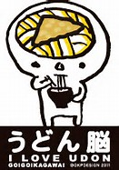

名前：千葉大智（ちば ひろとも）
ニックネーム：ちひろ うどん etc...
以前は宇宙工学をしたいと考えていたが、本当にしたいのかわからなくなったのでしたいことを探しにきた
誕生日:12月4日
性別:男
趣味:バスケ 音楽鑑賞（UNISON SQUARE GARDEN/backnumber/RADWINPS/etc..)
学部:工学部 機械工学科1年
出身:香川県（うどん県）
AIに関わる仕事